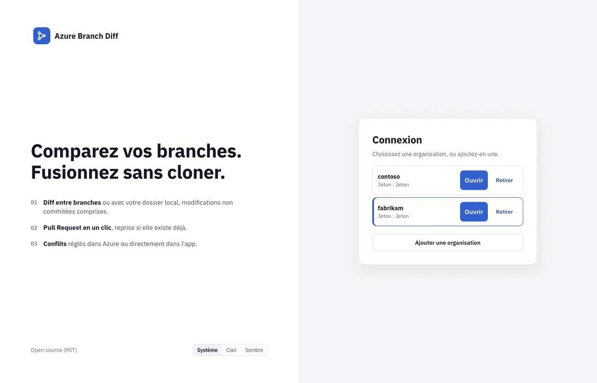
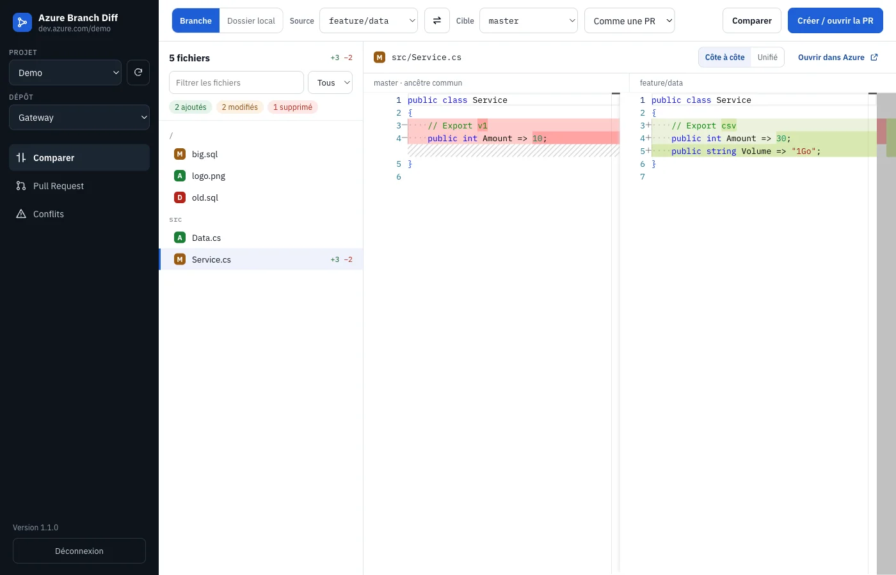
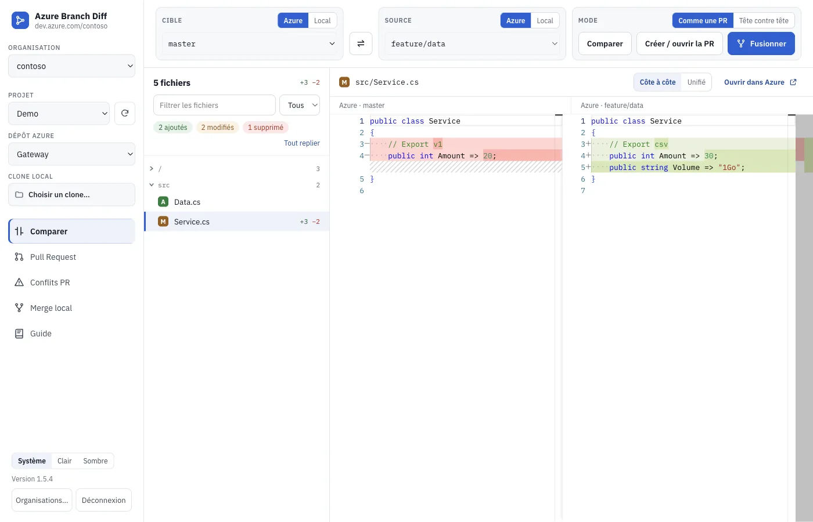
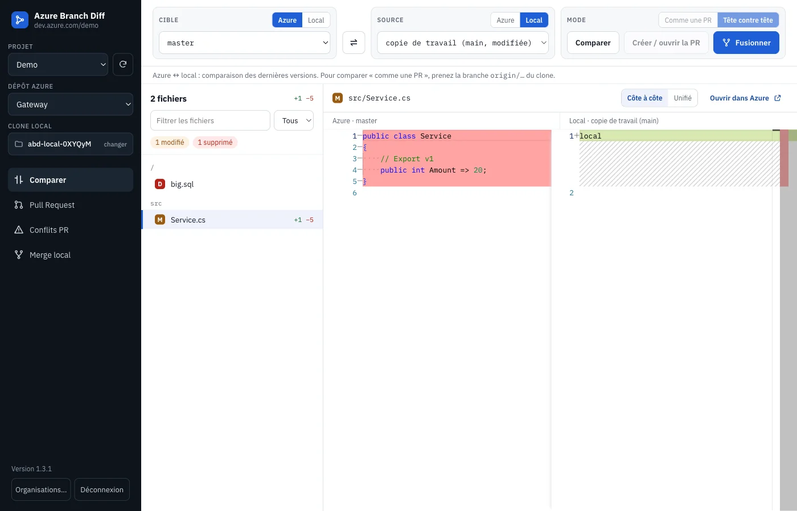
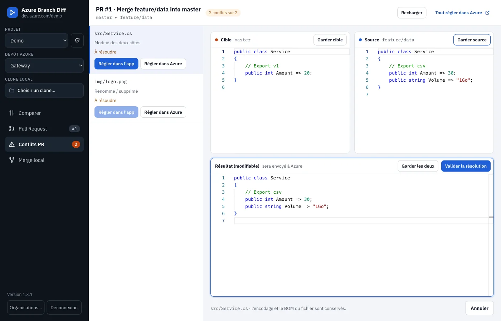
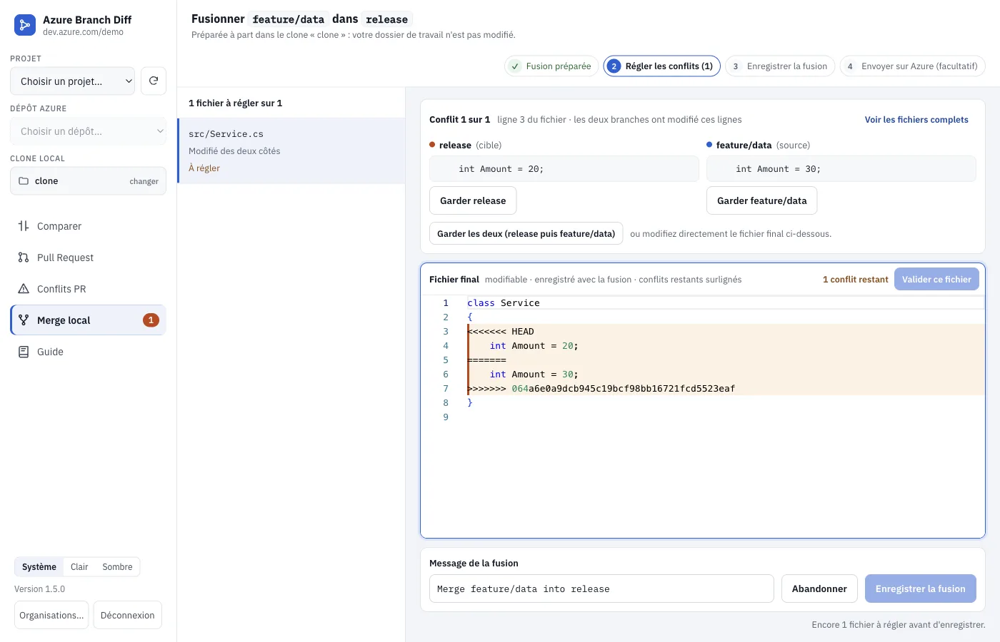
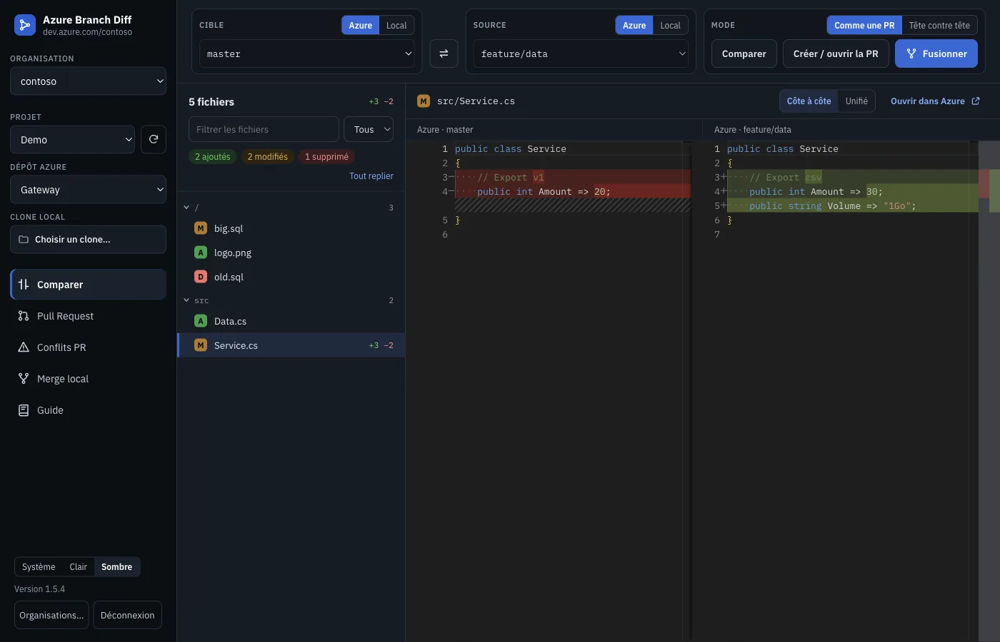

Guide d'utilisation
De l'installation au merge, pas à pas.
01Installer et se connecter
- Téléchargez l'installeur depuis la page d'accueil.
- macOS : glissez l'app dans Applications, puis faites clic droit → Ouvrir.
- Windows : au message « Windows a protégé votre ordinateur », choisissez Informations complémentaires → Exécuter quand même.
- Dans Azure DevOps, créez un jeton : avatar → Personal access tokens → New Token. Droits : Code — Read & Write et Work Items — Read.
- Dans l'app, saisissez l'URL de l'organisation (
https://dev.azure.com/mon-organisation) et le jeton, puis Se connecter. - Choisissez un projet et un dépôt Azure dans la barre latérale.
Le jeton est chiffré par le trousseau du système (Keychain sur macOS, DPAPI sur Windows). Il n'est envoyé qu'à Azure DevOps.
02Plusieurs organisations
- Un jeton par organisation : ajoutez chaque organisation avec son propre PAT.
- Un jeton multi-organisation (PAT créé avec « All accessible organizations ») : cliquez sur Découvrir mes organisations, cochez celles à ajouter, puis validez. Pour ajouter une autre organisation avec ce même jeton, choisissez Jeton enregistré.
- Une fois connecté, changez d'organisation avec le menu Organisation active de la barre latérale. Organisations… ramène à la liste, où Retirer oublie une organisation. Déconnexion garde les jetons.

03Comparer : Cible ← Source
Ce qui est à gauche s'affiche à gauche. Dans la barre d'outils, la Cible est à gauche et la Source à droite ; le diff garde le même ordre. Le bouton ⇄ échange les deux côtés.
Chaque côté est Azure (une branche du dépôt) ou Local. En local, vous choisissez une branche du clone, une branche origin/* ou la copie de travail, modifications non commitées comprises.
Dans tous les cas, les deux volets du diff montrent l'état actuel des branches. Le mode change seulement la liste des fichiers :
- Comme une PR : la liste ne contient que ce que la source apporte à la cible. Les fichiers déjà identiques sur la cible (portés sans merge, cherry-pick, squash) sont masqués, et un bandeau permet de les afficher.
- Tête contre tête : toutes les différences entre les deux branches.

Dans la liste des fichiers, vous pouvez filtrer par nom ou par extension. Cliquez sur un dossier pour le replier, ou utilisez Tout replier.

04Clone local et dossier téléchargé
Dans la barre latérale, Clone local ouvre un dossier de votre poste. L'app ne lit que les dossiers choisis ainsi.
Un dossier sans git (une archive ZIP téléchargée depuis Azure, par exemple) fonctionne aussi. Il est comparé fichier par fichier à n'importe quelle branche. Le merge, lui, demande un vrai clone.

05Pull Request et conflits Azure
- Créer / ouvrir la PR crée la PR Source → Cible, ou reprend celle qui existe déjà. Une source locale est d'abord poussée vers origin, après votre confirmation.
- L'onglet Pull Request affiche l'état du merge calculé par Azure. Vous pouvez lier des work items, puis Compléter la PR (merge, squash ou rebase).
- L'onglet Conflits PR liste les conflits. Pour chacun, résolvez-le dans Azure ou dans l'éditeur à trois volets : cible à gauche, source à droite, résultat modifiable.

06Merge local, dans toutes les directions
Fusionner fusionne la source dans la cible avec git, sur votre poste, dans toutes les directions : Azure → Azure, local → Azure, Azure → local, local → local.
- Le merge se fait dans un worktree temporaire. Votre copie de travail n'est pas touchée, sauf si vous la choisissez comme cible et qu'elle est propre.
- S'il y a des conflits, l'onglet Merge local les liste. Un conflit de texte se règle dans l'éditeur. Pour un binaire ou un fichier supprimé d'un côté, choisissez Garder source, Garder cible ou Supprimer le fichier.
- Écrivez le message, puis cliquez sur Valider le commit. Les hooks git ne sont pas exécutés.
- Si la cible est Azure, le commit est poussé après confirmation. Si une politique de branche refuse la poussée, l'app propose de créer une PR à la place. Si la cible est locale, Pousser vers origin est facultatif.

07Thème clair, sombre ou système
En bas de la barre latérale (et sur l'écran de connexion), choisissez Système, Clair ou Sombre. Toute l'interface suit ce choix, y compris l'éditeur, et il est retenu d'une session à l'autre.

Le guide est aussi disponible dans l'app, onglet Guide.
08Mises à jour et sécurité
- Sous Windows, une nouvelle version s'installe au redémarrage. Sous macOS, un bandeau propose de la télécharger.
- Toute poussée vers Azure demande une confirmation explicite.
- L'app refuse un dépôt dont la configuration exécute des commandes (filtres, pilotes de merge, hooks).